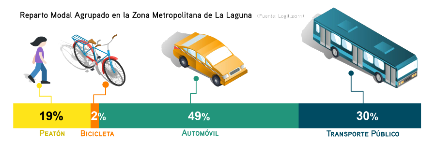
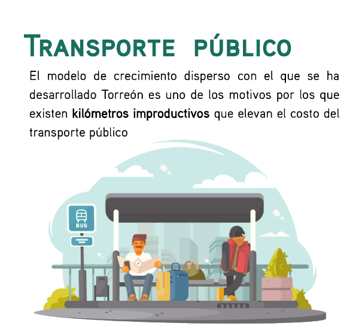
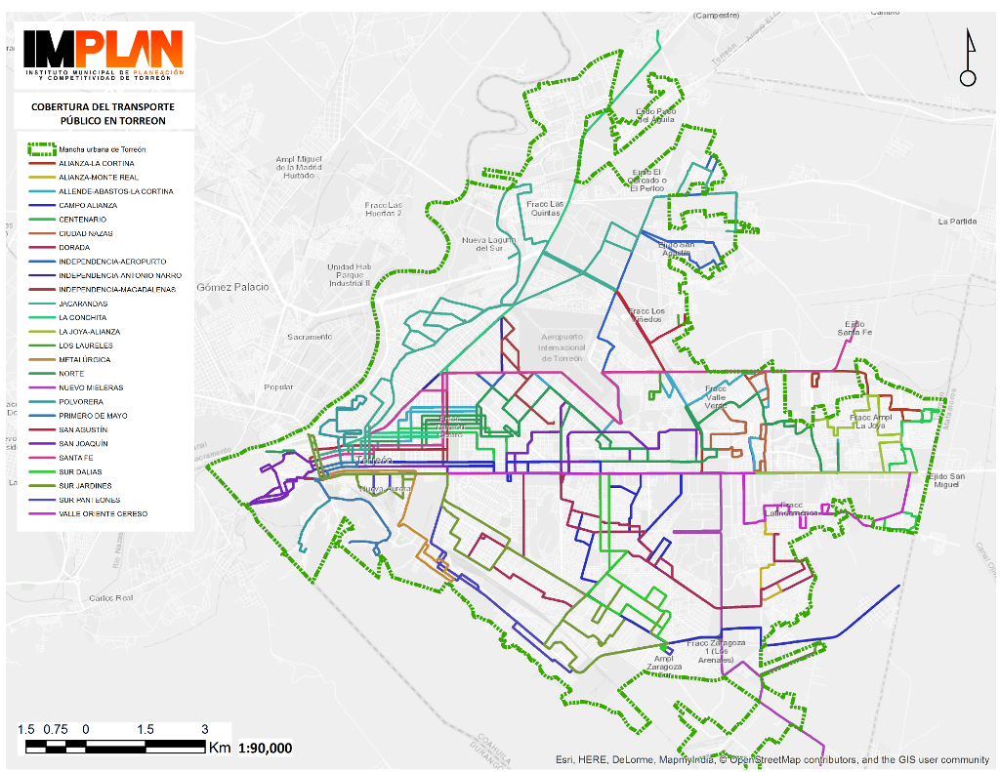

El transporte público es uno de los principales modos de viaje en la ciudad. Si el transporte cuenta con una buena calidad, eficacia y precio, mayor será el número de personas que lo usen, de no ser el caso, la movilidad de las personas se dificultará ocasionando un gasto elevado dentro de sus ingresos, optando por medios individuales que tienden a inducir más tráfico a la ciudad.
En Torreón la Dirección General de Vialidad y Movilidad Urbana registra un total de 28 rutas, que desde 2017, cobran a usuarios en general un precio de $ 11.00 pesos, la tarifa de descuento para usuarios de prepago es de $ 9.60 y una tarifa preferencial para personas de la tercera edad, con discapacidad y estudiantes de $ 7.00.
Uno de los principales factores que inciden en la determinación de estas tarifas son la oferta y demanda que hay del servicio. La demanda se conformará por los pasajeros que usen el sistema mientras que la oferta se verá influenciada por cuestiones como el número de unidades en operación, la velocidad media, pero sobre todo y en relación al crecimiento de la ciudad, los kilómetros improductivos, es decir los kilómetros en donde el transporte público no “subirá” usuarios.

El modelo de crecimiento disperso con el que se ha desarrollado la mancha urbana de Torreón es uno de los motivos por los que existen estos “kilómetros improductivos” que elevan el costo del transporte urbano.
El crecimiento disperso o desordenado se caracteriza por usos de suelo mono-propósito, en donde encontramos zonas que solamente cuentan con vivienda, por ejemplo, además se caracteriza por tener baja densidad, es decir, pocas personas habitando una gran extensión de tierra. Este modelo de crecimiento acarrea problemas como un gran consumo de cantidades de suelo per cápita que genera mayores costos de instalación y mantenimiento de la infraestructura, requiere de una mayor inversión pública en la malla vial, y da lugar a la fragmentación social debido a que se destinan zonas exclusivas para el emplazamiento de vivienda de interés social o para la vivienda residencial.

Según ONU – Hábitat, una masa crítica de usuarios es de vital importancia para lograr economías de escala para los servicios de transporte público. Un servicio básico de autobús necesita una densidad de alrededor de 35 a 40 personas por hectárea, mientras que un servicio de autobús intermedio es viable con una densidad de 50 personas por hectárea. (2014)
En ciudades como Guadalajara donde hay una densidad de 98 hab/ha. (IMEPLAN, 2015) el precio del transporte público es de $9.00, mientras que en Ciudad de México, ONU-Hábitat registra una densidad de población de 162.70 hab/ha, con un costo de transporte en autobús que va de los $ 5.00 a los $ 7.00, dependiendo de la distancia que recorra la ruta.
En Torreón, el Plan Director de Desarrollo Urbano 2014, nos dice que la densidad es de 40.89 hab/ ha, esto quiere decir que la cantidad de personas que demandan transporte público por kilómetro y las grandes distancias que separan las zonas habitacionales del centro de la ciudad, se convierten en factores importantes que encarecen el costo del transporte urbano.
Si nos trasladamos a Europa podemos encontrar que el desarrollo de ciudades en Suecia, Holanda y Alemania, entre otros, ha sido conducido por “una política urbana apoyada por un sistema de transporte público eficaz que produce no sólo una mejor calidad de vida, cuidado del medio ambiente y crecimiento económico, sino fundamentalmente una sociedad que tiene más oportunidades dentro de su ciudad, en términos de recreación y trabajo, por ejemplo”. (Jans, M. 2009).
En este contexto, es necesario que exista una relación estrecha entra la planeación urbana y la planeación del transporte, que permita una oferta multimodal en la que se privilegien a los medios de transporte más sustentables y la accesibilidad de los habitantes a los diversos puntos de la ciudad.
Cobertura del Transporte Público en Torreón

VER COBERTURA DEL TRANSPORTE EN SIG IMPLAN
.